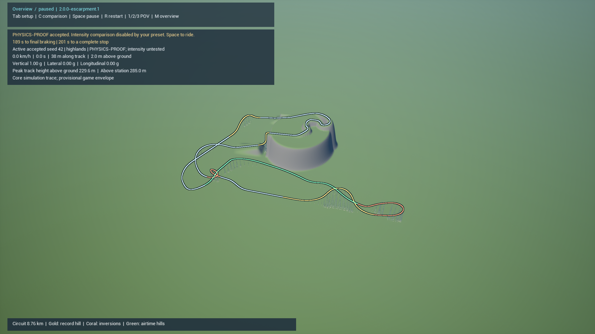
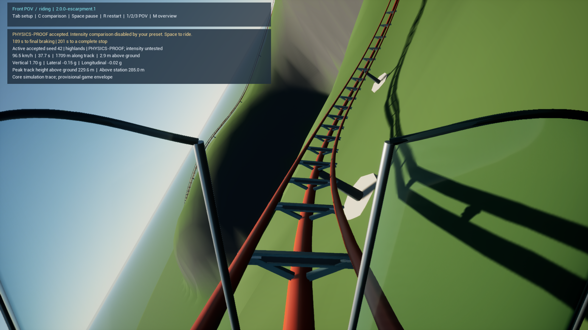
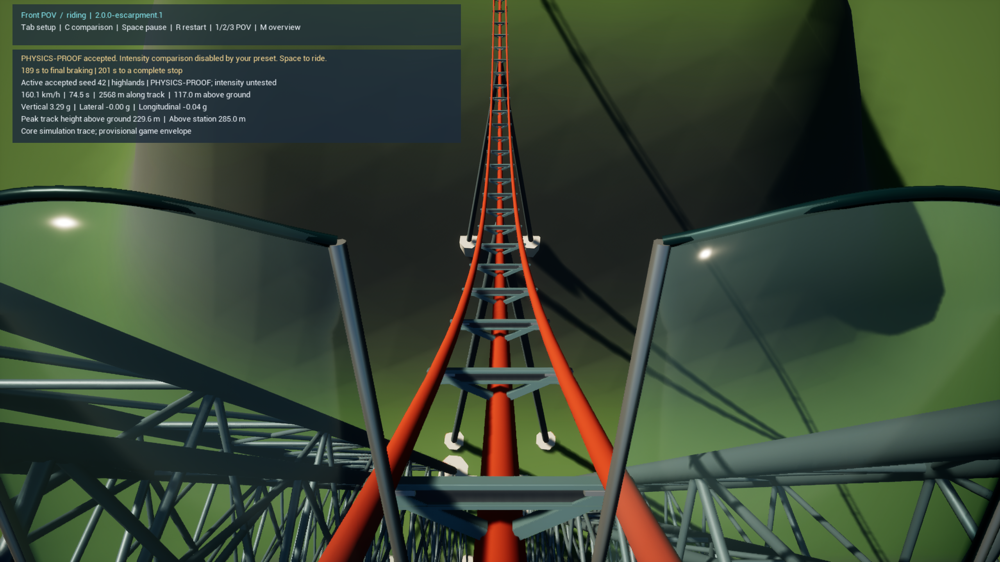
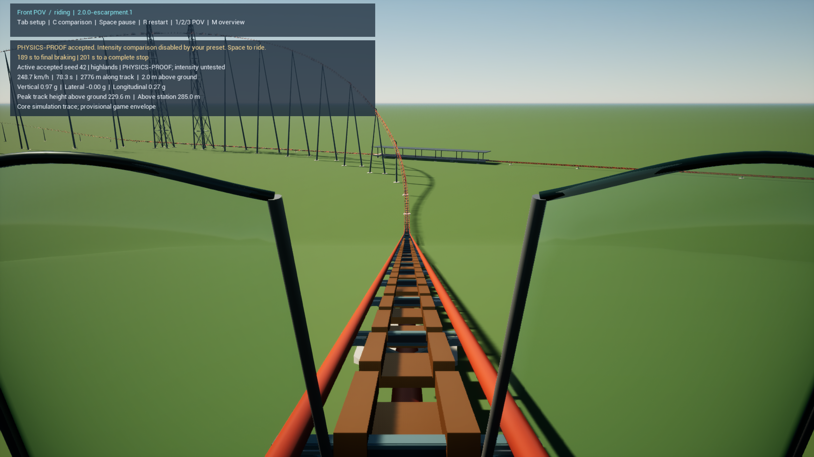
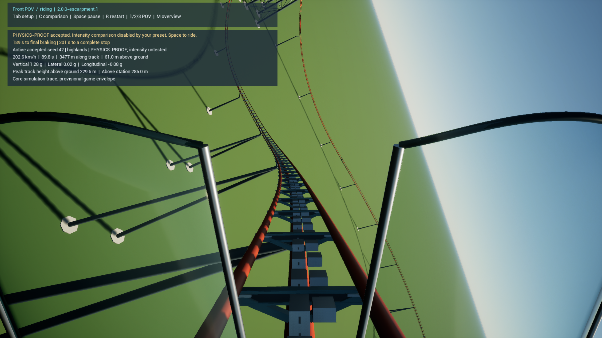
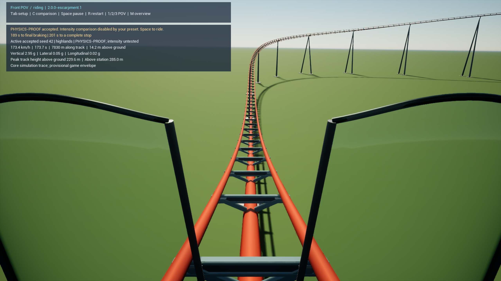

VERIFIED PACKAGED PROTOTYPE · 2.0.0-escarpment.1
Closer terrain. Continuous motion.
Open Play VibeCoaster2.lnk, press F9, then Space. The previous build and profile remain available through the Highlands fallback shortcut.
300.54 km/hMeasured peak
3.06 mWinding-act mean rail height
201.27 sFull ride to rest
8 / 8Representative cases pass
21 native suites · 6 Unreal tests · front and rear GPU traversals · exact native/runtime metrics · unchanged force caps.
Full evidence and limitations · Build and source hashes · Preserved camelback reference fit
Actual packaged views

Whole circuit
Winding terrain at 2.9 m rail height
Cliff descent
Visible descending LSM
Banked wave with its physical trim bank
Loaded signature pullout into the broad returnSynchronized ride telemetry
Choose a representative seat. Display traces are 60 Hz; force, rate and jerk acceptance uses 960/1920 Hz replay.

Seed and parameter corpus
| Case | Candidate | Peak km/h | Seconds | Swept gap m |
|---|
| baseline-42 | 0 | 300.54 | 201.27 | 0.513 |
| seed-1 | 1 | 300.54 | 203.53 | 0.561 |
| seed-5 | 0 | 300.54 | 203.77 | 0.523 |
| seed-77 | 4 | 300.54 | 223.18 | 0.489 |
| twin-2718 | 0 | 300.54 | 201.98 | 0.480 |
| flowing-7 | 2 | 300.54 | 226.23 | 0.639 |
| higher-314 | 5 | 310.54 | 228.06 | 0.608 |
| lower-42 | 0 | 290.54 | 199.64 | 1.112 |
What the numbers do not establish
The 5 m aim applies to ordinary terrain interaction. Whole-circuit mean is 39.70 m including giant elements; the initial climbing approach averages 9.16 m. The large inversion remains 176.8 m. Terrain art, manufacturer calibration, broader layout families and subjective ride feel remain further work. This is not F2291 certification or a calibrated intensity comparison against Falcon’s Flight.
Executable SHA-256: 397DF917F27129F2A33ADD25552669D3303F457D563182ABFFBD10EACA204408